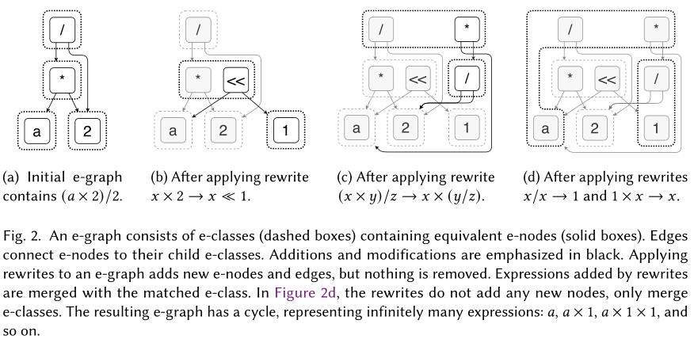

egg: Fast and Extensible Equality Saturation
- What is equality saturation ?
- How do we implement this ?
- What might be the implications in
aesara? - How do we relate this to
kanren?
Introduction
Equality saturation:
- Use rewrites to construct an e-graph \(E\) that represents a set of programs equivalent to \(p\);
- Continue until this procedure reaches a fixed point (saturation) or a timeout is reached;
- Use an extraction procedure to select the optimal program according to a user-defined cost function.
Challenges:
- Maintaining congruence is expensive as E grows
- [TODO] Understand what the problem is
E-graphs
O 
Equality Saturation
Equality saturation is an efficient solution to the phase ordering problem: we apply all rewrites using an e-graph.
def equality_saturation(expr, rewrites): egraph = initialize_egraph(expr) while not egraph.is_saturated_or_timeout(): for rw in rewrites: for (subst, eclass) in egraph.ematch(rw.lhs): eclass2 = egraph.add(rwh.rhs.subs(subst)) egraph.merge(eclass, eclass2) return egraph.extract_best()
e-graphs traditionally maintain their data structure invariants after each operation, but it is costly. egg's rebuilding algorithm only rebuilds the invariants at certain critical points.